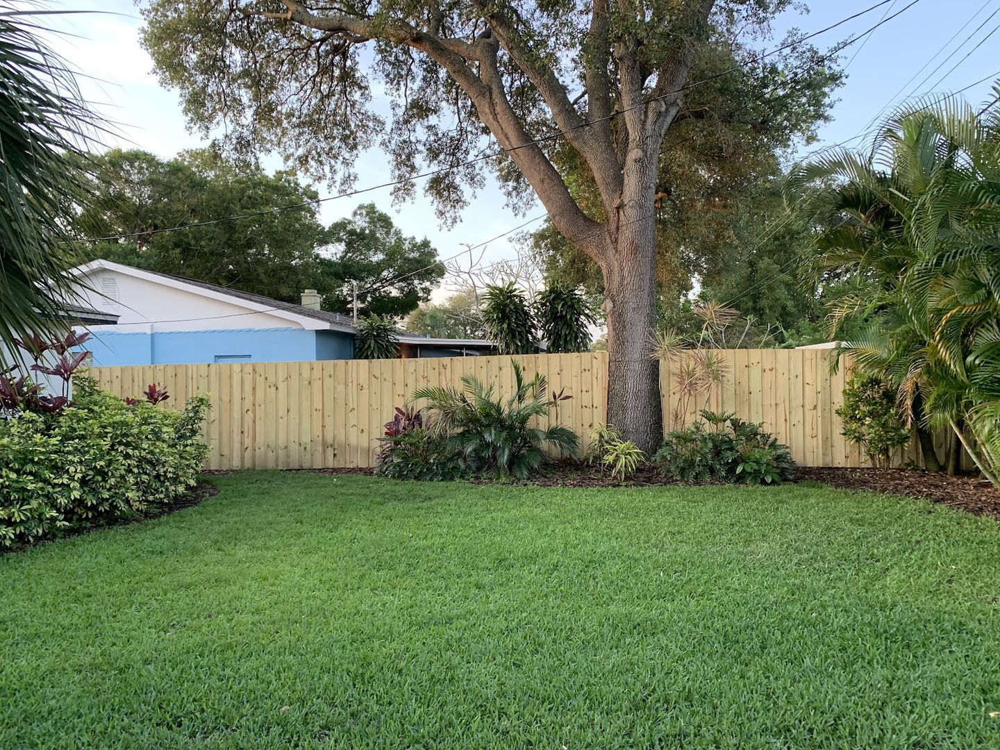
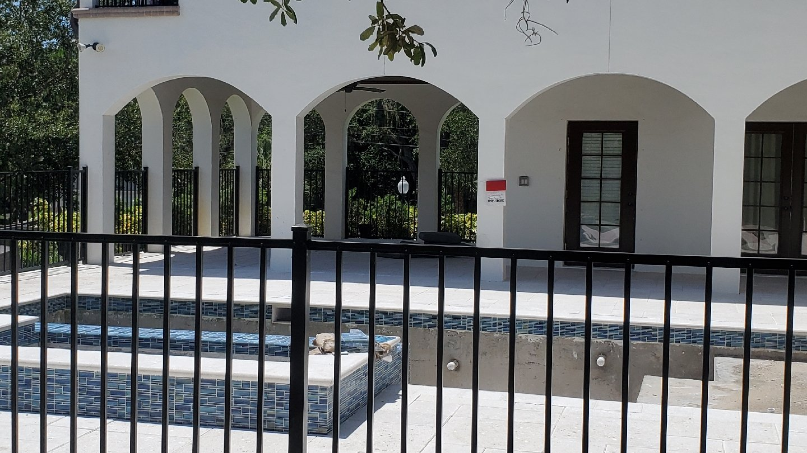
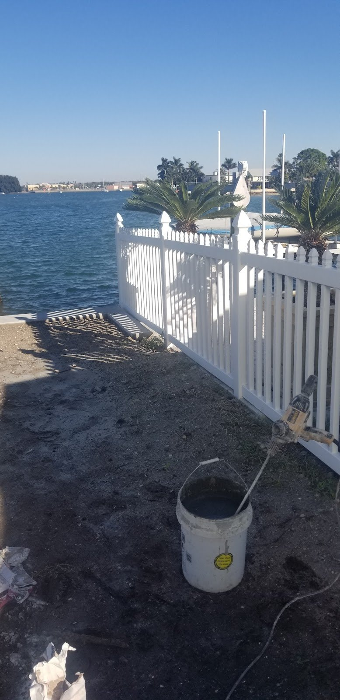
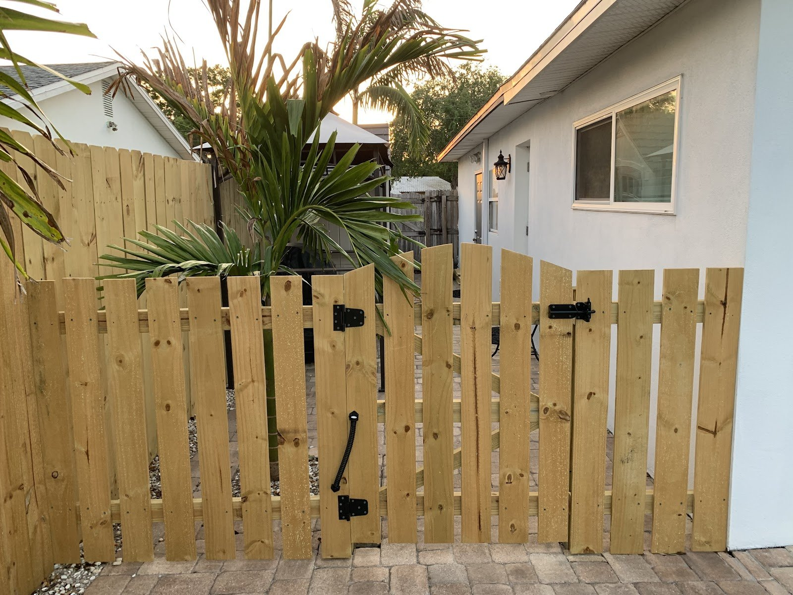
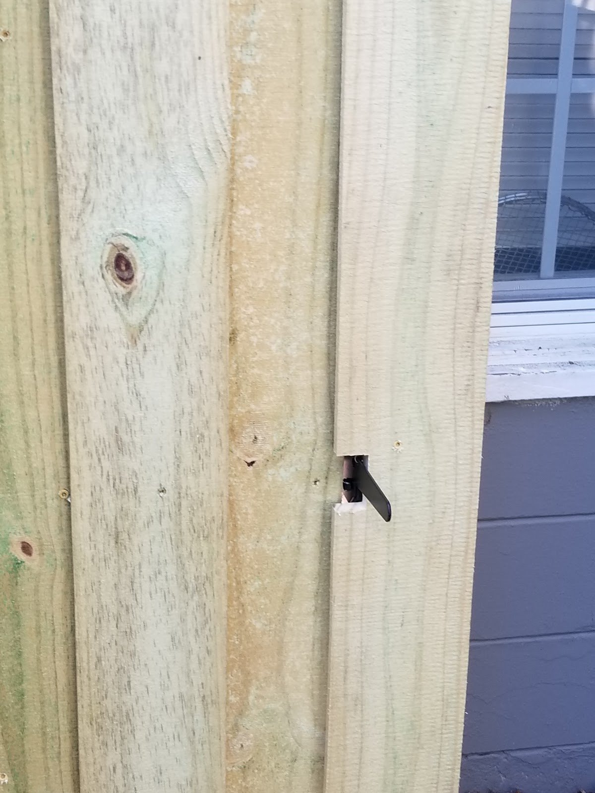
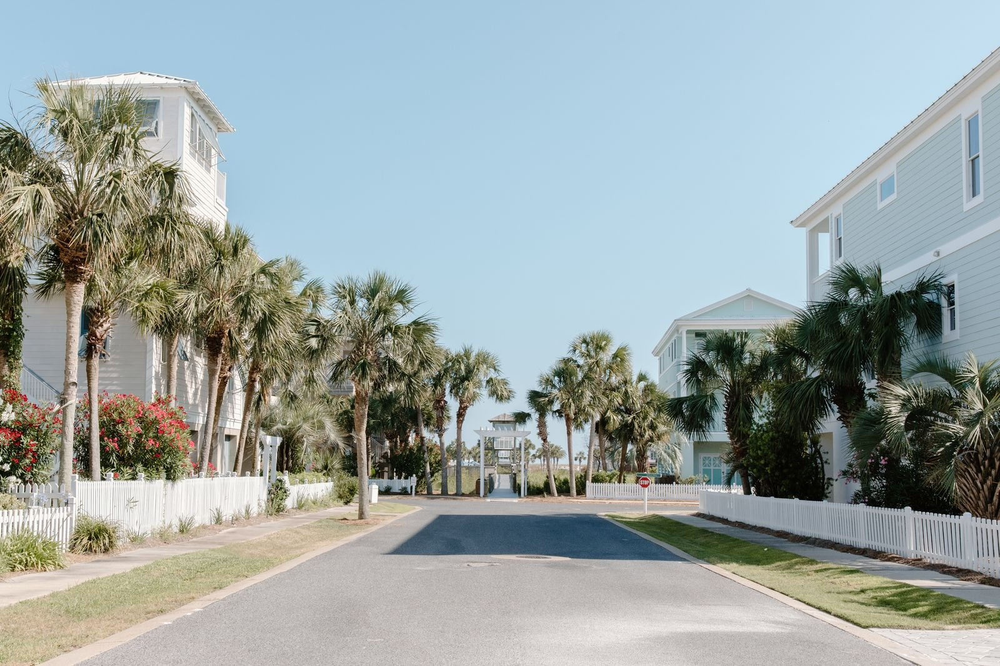
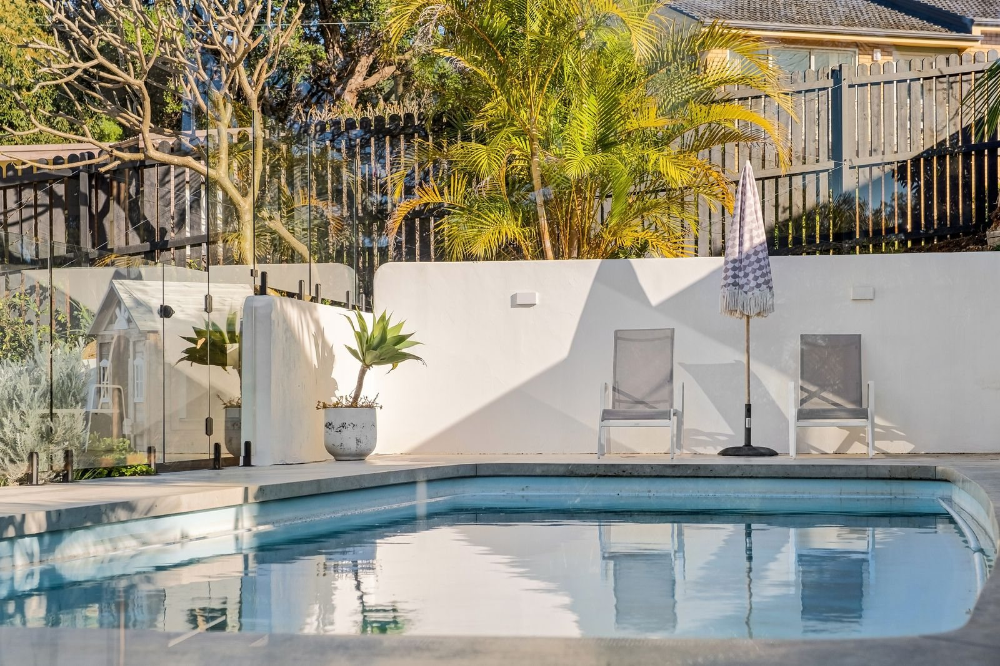

Fences & gates · St. Petersburg, FL
Good fences.Gulf Coast yards.
Wood privacy, wood gates, aluminum pool fences, white vinyl pickets, and repairs for the ones already standing. Pick a style, then call or text us a photo of the yard.
Choose your fence



Fig. 04Their photo · a wood privacy fence round a backyard, live oak and palms kept
01 The styles
Three fences.
Three edges.
Every style ends in its own silhouette, and every photo here is one of theirs. Look at the tops: that is how you tell them apart from the street.


02 Gates
The part of the fence you touch every day.
A gate gets opened with full hands, leaned on, and left open by the kids. We build wood gates to match the run they hang in: same boards, black hinges, a handle where your hand expects it.
Text a photo of the openingHome water
St. Petersburg& Pinellas County
Based in St. Petersburg, FL 33708. Fences and gates for yards on the bay, on the canals and on quiet streets across Pinellas County.
Photo: St. Petersburg waterfront at night by Eden, Janine and Jim, CC BY 2.0, via Wikimedia Commons. Illustrative, not their work.

03 What we do
Five boards.
Five jobs.
Each board is one service. Tap a board to read it. That's the whole list, and we would rather do five things properly than fifty badly.
Ask about yoursTall pine boards set tight, so the backyard is yours again: oak, palms and all.
Walk gates hung beside the house or set into a new run, with black hinges and a handle.
Black aluminum round the pool deck, so it's closed off and you still see the water.
White pickets along the street or the waterline, for a front yard that looks finished.
A leaning section, a loose board, a gate that drags: text a photo and tell us what's wrong.
04 Along the fence line
Walk the line.
Their photos, full size.
The first five are Vortex Fence's own photos. The last row is illustrative Gulf Coast stock, so you can picture the setting; it is not their work.


05 Start here
Text a photo.
Get a straight answer.
(914) 474-4754
- Call(914) 474-4754
- Text photos(914) 474-4754
- Emailvortexfence@gmail.com
- FacebookVortex Fence on Facebook
St. Petersburg, FL 33708 · Pinellas County
06 Questions
Asked over the fence.
Which fence is right around a pool?
Most people pick black aluminum around a pool deck: it closes the pool off and you can still see the water through it. Send a photo of the deck and we can talk through height and where the gate goes.
Wood or vinyl in Florida sun and salt air?
Both are common here and both look right on a Gulf Coast lot. Pine is warm, can be stained, and is easy to fix one board at a time. White vinyl stays bright and suits a picket line along the street or the water. Tell us where the fence runs and what it has to do, and we will walk you through the trade-offs honestly.
Can you fix a leaning section without replacing the whole fence?
Fence repairs are one of the five things we do. Text a photo of the lean, plus a close-up of the posts at ground level, and we will tell you straight whether it is a repair or a rebuild.
What should I text for a quote?
Two or three photos of the yard or the damage, a rough length in feet, the style you have in mind (wood, aluminum or vinyl), any gates you need, and your neighbourhood. That is enough to start.
Do you build gates on their own?
Yes. Wood gates are their own service. Measure the opening, photograph the posts on each side, and send both.